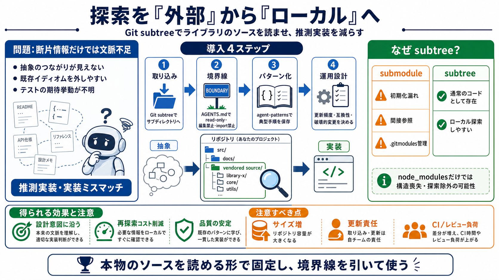

Managing Git Projects: Git Subtree vs. Submodule
Component-based development favors Git submodules, whereas system-based development favors Git subtrees. Git submodul…

探索を“外部”から“ローカル”へ
断片情報の限界
地図がない
本物を読ませる
運用コスト差
境界線が必須
探索を節約する
導入手順（概略）
Q&Aを圧縮
見落としの典型
負債も同時に
参照ガイド（記事要旨）
Component-based development favors Git submodules, whereas system-based development favors Git subtrees. Git submodul…
Treating the submodule as a separate entity is easy. You can just do all your usual branching, committing, pushing (the …
( Git subtree is a solution that allows merging one repository into another as a subdirectory, but keeping the entire c…
Git submodules have a smaller repository size since they are just links that point to a specific commit in the child pro…
# Git Git Submodules vs. Git Subtree ## 2024/05/26 Git Git Submodules vs. Git Subtree ### Integrating External Git Re…